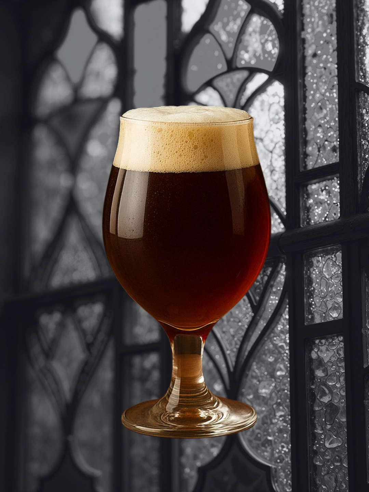

Tadición de abadía
"Respeto a la tradición. Cada lote pequeño, una búsqueda de la perfección."
Estilos


Blog
20/09/25
El Secreto de la Tripel: ¿Tan Fuerte y Tan Ligera?

01/10/25
¡De 5 a 20 Litros! Nuestro Compromiso con el Batch Pequeño

15/10/25
Stout: La Nobleza del Tostado y la Levadura

01/11/25
Uruguay y la Revolución Artesanal: Un País que Sabe de Cerveza